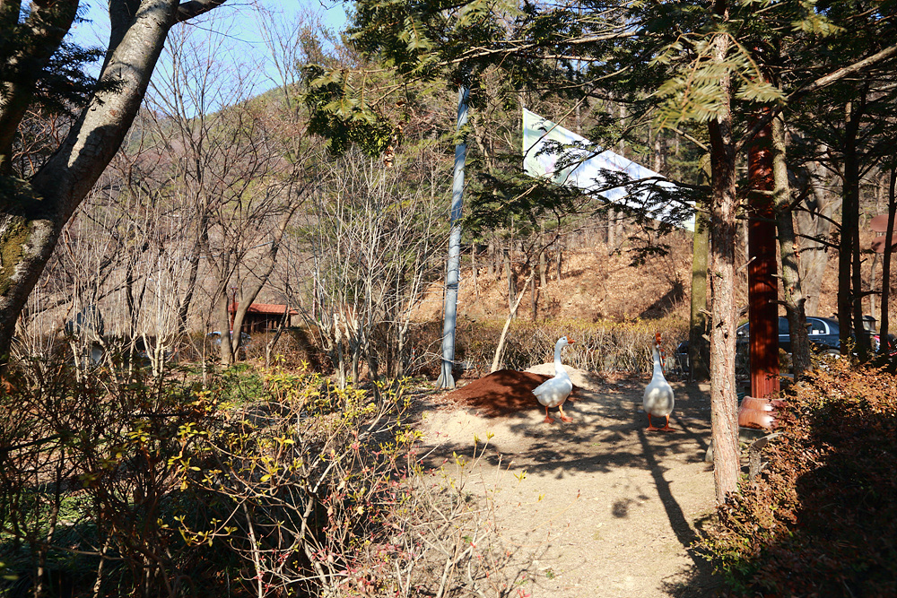
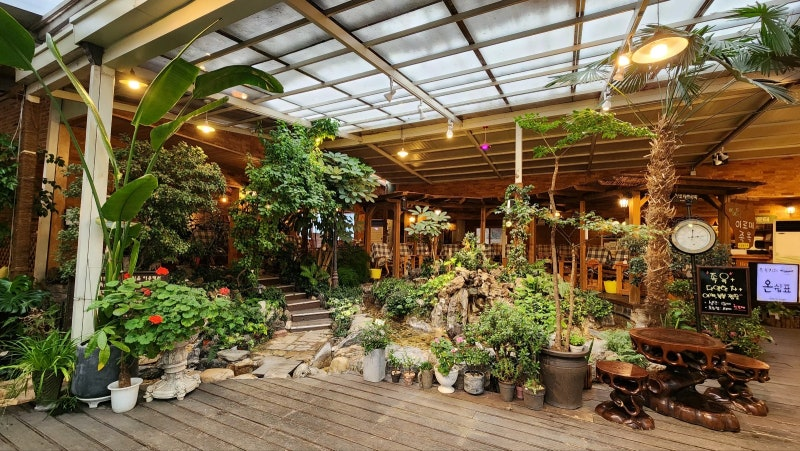
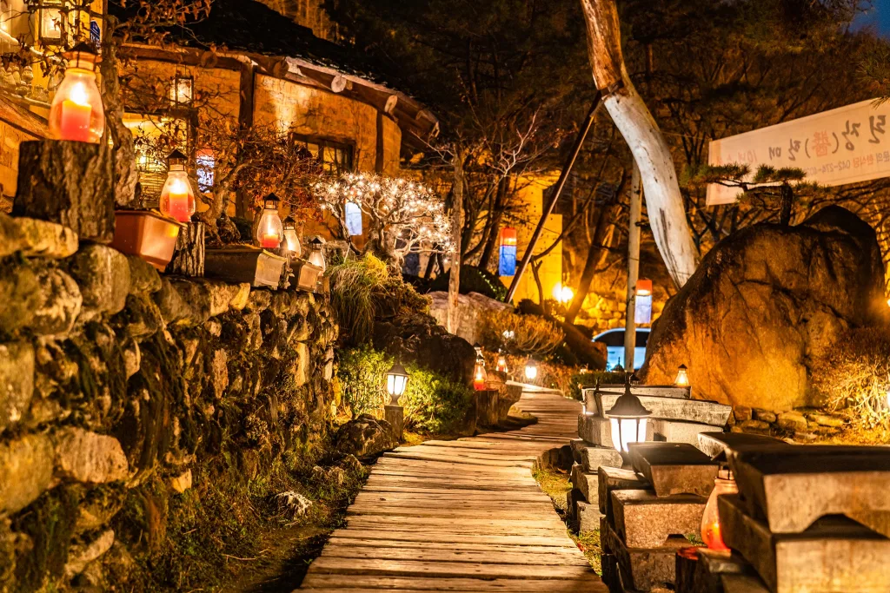

대전근교 명소
대전세종충남 차가 있다면 가볼만한 곳들 소개
-

만인산 휴게소
1959년 6월 4일, 추부터널이었던 곳이며, 1986년에 그 옆에는 새로 생긴
터널이 있다. 당시에는 대전과 금산을 이어주는 사실상 유일한 제대로된
도로였다.
오늘날 아니 이제는 한 때의 명소이다. 대전천의 발원지를 가볼 수 있으며,
겨울철에 먹는 호떡이 일품이다
여름철에 방문하면 마치 에어컨을 작동한 것처럼 매우 시원하여 피서지로도 유명하다.
분수가 하나 있으며 그곳에 거위 한쌍이 20년 넘게 살고 있다.
어지간한 아이들을 데려가도 거위의 나이가 더 많다. 필자가 10살때부터 있었으니까 대강 맞을 것이다.
거위의 평균수명은 45년 정도이다.
-

허브향기
만인산 가는 길에 있으며, 양식을 판매하고 있는 식당이다. 입구에 개가
2마리 지키고 있으니 개조심
-

옛 터 박물관
이름이 박물관이지 실제로는 양식, 한식, 카페를 하고 있는 식당이다.
아 물론 명목상 박물관이 있기는 하다.
예전에 비하여 주차공간과 부지를 확장하여 사업을 더욱 크게 벌이고 있는 것 같다